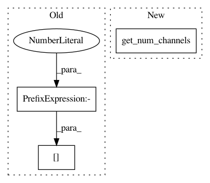

c2041cf9be09dfbc5f975ab21fa1d318ad0f2c24,batchflow/models/torch/modules.py,FPA,__init__,#FPA#Any#Any#Any#Any#Any#Any#Any#Any#,177
Before Change
branches = [dict(layout=layout, filters="same", kernel_size=1)] // the mid branch from inputs tensor directly
if use_dilation:
base_kernel_size = pyramid_kernel_size[-1] // 3
main_kernel_size = [base_kernel_size] * (depth + 1) + [factor] * (depth) // 3 3 3 3 2 2 2
// infering coresponding dilation for every kernel_size in pyramid block
pyramid_dilation = [round((rf - base_kernel_size) / (base_kernel_size - 1)) + 1
After Change
if bottleneck:
bottleneck = 4 if bottleneck is True else bottleneck
out_filters = get_num_channels(inputs)
inner_filters = out_filters // bottleneck
self.pyramid = ConvBlock(dict(layout=layout, kernel_size=1, filters=inner_filters),
pyramid_args,
dict(layout=layout, kernel_size=1, filters=out_filters), inputs=inputs, **kwargs)
In pattern: SUPERPATTERN
Frequency: 4
Non-data size: 3
Instances
Project Name: analysiscenter/batchflow
Commit Name: c2041cf9be09dfbc5f975ab21fa1d318ad0f2c24
Time: 2019-12-25
Author: nikita_007_94@mail.ru
File Name: batchflow/models/torch/modules.py
Class Name: FPA
Method Name: __init__
Project Name: analysiscenter/batchflow
Commit Name: b4479e2c2f165a3468b9c8839710794008b21a58
Time: 2017-12-12
Author: a.kozhevin@analysiscenter.ru
File Name: dataset/models/tf/linknet.py
Class Name: LinkNet
Method Name: decoder_block
Project Name: analysiscenter/batchflow
Commit Name: da6c8b0423238e90185e776b5f217ee02c98f6ba
Time: 2017-12-08
Author: a.kozhevin@analysiscenter.ru
File Name: dataset/models/tf/linknet.py
Class Name: LinkNet
Method Name: decoder_block
Project Name: analysiscenter/batchflow
Commit Name: 4bad069139070d6f70836bcb64976e4ea00ea7a0
Time: 2020-01-22
Author: nikita_007_94@mail.ru
File Name: batchflow/models/torch/blocks.py
Class Name: ResBlock
Method Name: __init__